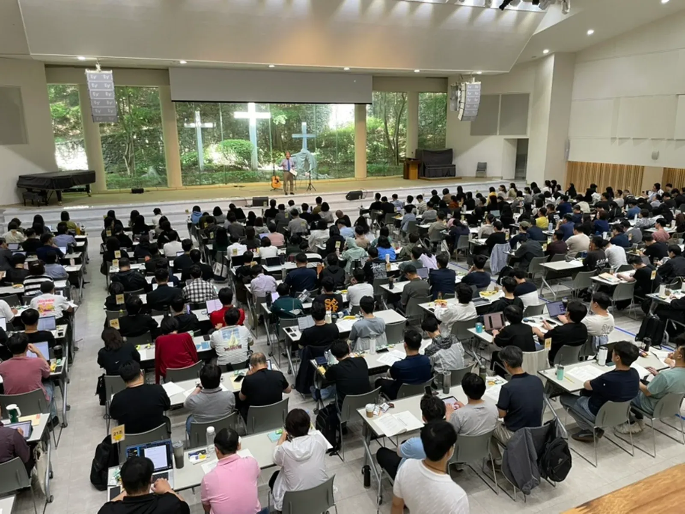
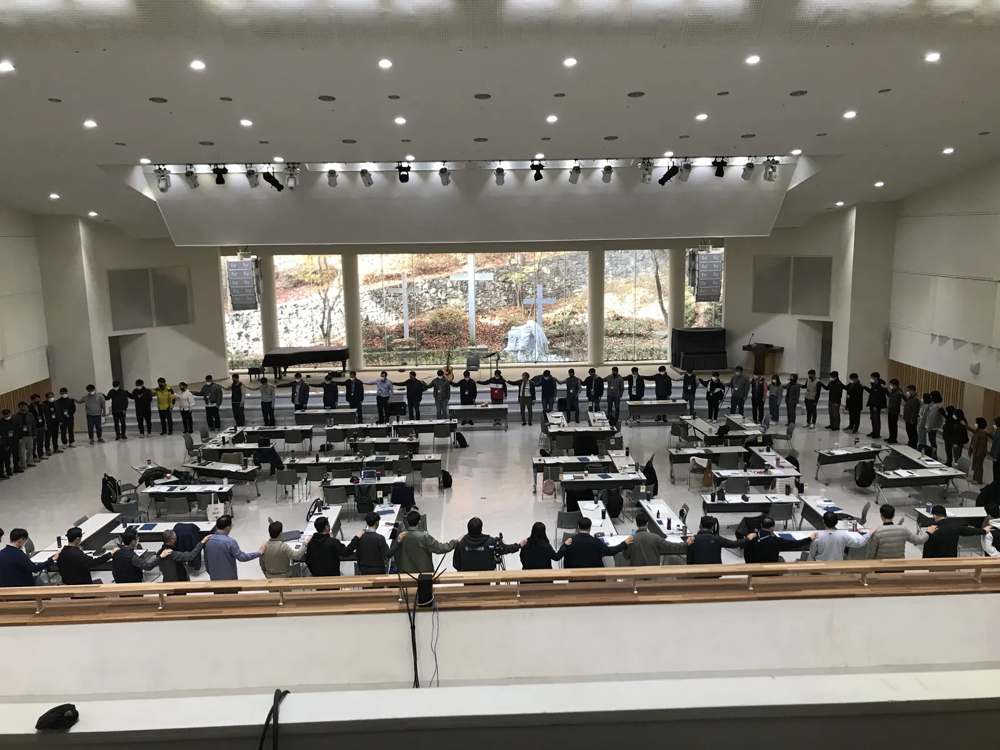
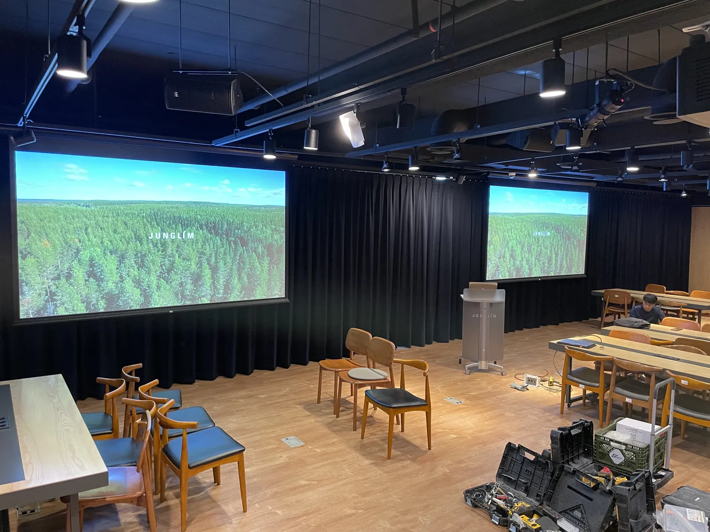

경기 광주 세미나 음향은 「강사 목소리가 맨 뒷자리에서도 피곤하지 않게 들리는가」가 기준입니다. 세미나는 음악 공연보다 소리가 작아 보여도, 몇 시간씩 말을 듣는 자리라 또렷함이 더 중요합니다. 제이식스미디어가 곤지암 소망수양관에서 하나복네트워크 본강좌 세미나 음향을 맡았던 현장을 바탕으로, 세미나 · 컨퍼런스 담당자가 챙길 것을 정리했습니다.

- 세미나 음향은 크기보다 또렷함 — 강사 마이크와 스피커 방향을 객석 뒤쪽 기준으로 맞춥니다.
- 강사 · 사회 · 질의응답 · 패널 순서마다 필요한 마이크를 순서표로 세고 여분을 하나 더합니다.
- 강의 중 영상을 튼다면 노트북 소리를 믹서에 연결하는 방법을 리허설 때 확인합니다.
- 여러 날 이어지는 세미나는 매일 아침 마이크 배터리와 소리를 다시 점검합니다.
1. 경기 광주 세미나 음향, 기준은 맨 뒷자리입니다
세미나는 참석자가 책상에 앉아 오래 듣는 자리입니다. 앞자리만 크게 들리고 뒷자리는 웅얼거리면, 뒤에 앉은 분들은 몇 시간 동안 귀를 기울이느라 지칩니다. 그래서 스피커는 앞쪽 단상 옆에만 크게 두기보다, 객석 뒤쪽까지 고르게 닿도록 방향과 높이를 맞추는 것이 먼저입니다. 강당이 길다면 뒤쪽을 위한 스피커를 따로 두는 방법도 있습니다.
| 점검 | 어떻게 | 언제 |
|---|---|---|
| 뒷자리 또렷함 | 강사 마이크로 말하며 맨 뒷줄에서 듣기 | 리허설 |
| 가장자리 자리 | 양쪽 끝 자리에서 한 번씩 듣기 | 리허설 |
| 하울링 | 강사가 단상 앞으로 걸어 나와도 괜찮은지 | 리허설 |
| 영상 소리 | 노트북 영상 소리가 스피커로 나오는지 | 강의 전 |
| 배터리 | 무선마이크 배터리 새것 · 여분 | 매일 아침 |
2. 하나복 본강좌는 이렇게 이어집니다
하나복네트워크 「하나님 나라 복음으로 교회 세우기」 세미나 본강좌는 2026년 6월 1일부터 3일까지 곤지암 소망수양관에서 열렸습니다. 김호진 대표는 매년 6월 본강좌와 11월 심화강좌에 음향 스태프로 참여합니다. 여러 날 이어지는 세미나라, 첫날 설치하고 맞춘 소리를 마지막 날까지 같은 상태로 유지하는 것이 중요합니다.
자세한 기록은 하나복 본강좌 이야기에 사진과 함께 있습니다.

3. 마이크는 순서표로 셉니다
세미나 · 컨퍼런스는 강의, 사회, 질의응답, 패널 대담이 번갈아 나옵니다. 순서마다 동시에 켜져 있어야 하는 마이크 수를 세고, 고장에 대비해 하나를 더합니다.
| 순서 | 마이크 | 메모 |
|---|---|---|
| 사회 · 공지 | 핸드 1 | 공지가 길면 스탠드에 꽂아 두기 |
| 강의 | 핀 1(또는 핸드) | 화면을 넘기며 움직이면 핀이 편함 |
| 질의응답 | 핸드 1~2 | 객석에 들고 다닐 진행 요원 정하기 |
| 패널 대담 | 패널 수만큼 | 한 사람씩 말할 때 나머지는 줄여 두기 |
| 찬양 · 기도(교회 세미나) | 인도자 · 반주 | 순서표에 따로 표시 |
4. 강의 영상과 노트북 소리를 미리 연결합니다
강의 중에 영상을 틀면 화면은 나오는데 소리가 안 나오는 일이 자주 생깁니다. 노트북 소리를 믹서로 보내는 선과 방법을 리허설 때 강사의 노트북으로 직접 확인해야 합니다. 강사마다 노트북이 다르면 순서 사이에 연결을 바꾸는 시간도 계산해 둡니다.
- 강사별로 영상 · 음원이 있는지 미리 묻습니다.
- 강사 노트북을 리허설 때 연결해 소리와 화면을 함께 확인합니다.
- 가능하면 발표 자료를 한 대의 노트북에 모아 바꿔 끼우는 일을 줄입니다.
- 영상 소리 크기를 강사 목소리와 비슷하게 맞춰 둡니다.

5. 여러 날 이어지는 세미나는 매일 아침 다시 봅니다
사흘 이어지는 세미나라면 첫날 맞춘 소리가 둘째 날에도 그대로라고 생각하기 쉽습니다. 하지만 밤사이 장비 위치가 바뀌거나 배터리가 떨어지는 일이 생깁니다. 매일 첫 순서 전에 짧게 점검 시간을 잡아 두세요.
- 무선마이크 배터리 교체 또는 충전 확인
- 스피커 위치 · 방향이 그대로인지
- 그날 순서표(강사 · 영상 유무) 다시 받기
- 전날 불편했던 점(어느 자리가 잘 안 들렸는지) 반영
6. 경기 광주 세미나 음향 견적 문의 전에 정리할 것
남양주 별내 사무실에서 광주시청까지 차로 약 30분 · 32.2km(막히지 않을 때 기준)입니다. 수양관이나 연수원에 있는 음향 장비를 그대로 쓸지, 더할지부터 장소 담당자에게 확인해 두면 상담이 빠릅니다.
자동 견적서에서 항목을 골라 보내 주시면 확인 후 안내합니다. 견적서에는 단가가 「협의」로 나오고, 담당자가 현장 여건을 확인한 뒤 확정 견적을 보냅니다.
| 자동 견적서 항목 | 언제 고르나 |
|---|---|
| 교회행사 음향 · 조명 | 교회 세미나 · 수련회 음향을 통째로 맡길 때 |
| 지자체 · 컨퍼런스 음향 | 공공 · 기업 컨퍼런스 음향을 맡길 때 |
| 음향 (소형) | 세미나 · 강연 · 소규모 예배 규모일 때 |
| 무선 마이크 추가 | 강사 · 질의응답 · 패널 마이크가 더 필요할 때 |
| 프로젝터 · 스크린 | 강의 화면을 띄울 때 |
| 음향 엔지니어 | 여러 날 현장 운영을 맡길 때 |
지역 안내는 경기 광주 음향 · 설치 안내, 마이크 개수와 배터리는 무선마이크 준비 글에 따로 정리했습니다.
자주 묻는 질문
수양관에 음향 장비가 있는데 더 필요한가요?
강의만 하는지, 찬양이나 영상이 있는지, 강당 뒤쪽까지 잘 들리는지에 따라 다릅니다. 장비 현황과 순서표를 보내 주시면 무엇을 더할지 함께 봅니다.
질의응답 마이크는 몇 개가 좋나요?
객석 크기에 따라 다르지만 앞뒤로 나눠 들고 다닐 수 있게 두 개를 두면 기다리는 시간이 줄어듭니다. 순서표와 객석 배치를 보내 주시면 함께 정합니다.
여러 날 세미나도 맡기나요?
하나복 본강좌는 2026년 6월 1일부터 3일까지 이어진 세미나였습니다. 일정과 매일의 순서표를 알려 주시면 그에 맞춰 준비합니다.